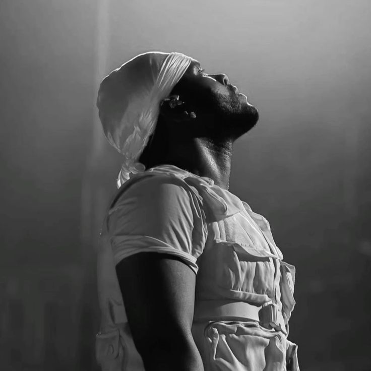

Audience
Mostly Teenagers
Design & Style
For the color and design, I've chosen a dark and low-key aesthetic that matches The Weeknd's style. The colors will be navy blue, black, and white.
Scope
I'm planning to have the following pages on my website:
- Home
- Music
- Images
Image
Watch The Weeknd's Music Video
Overview
The Weeknd, whose real name is Abel Makkonen Tesfaye, is a Canadian singer, songwriter, and record producer known for his unique voice and versatile musical style, blending R&B, pop, and electronic music. He first gained widespread recognition through his mixtapes in 2011 and has since become one of the most successful and influential artists of his generation.
Early Life
- Born: February 16, 1990, in Toronto, Ontario, Canada.
- Background: He is of Ethiopian descent. He was raised by his mother and grandmother after his parents separated.
Career Beginnings
The Weeknd initially gained attention in 2011 by releasing three critically acclaimed mixtapes:
- House of Balloons
- Thursday
- Echoes of Silence
These mixtapes were later compiled into the 2012 album Trilogy.
Studio Albums
- Kiss Land (2013) - His debut studio album.
- Beauty Behind the Madness (2015) - Included hits like "Can't Feel My Face" and "The Hills."
- Starboy (2016) - Featured the title track "Starboy" and collaborations with Daft Punk.
- After Hours (2020) - Known for the global hit "Blinding Lights."
- Dawn FM (2022) - Continued his exploration of various musical styles.
Notable Extended Plays (EPs)
- My Dear Melancholy, (2018) - An introspective EP touching on themes of heartbreak and regret.
Compilation Albums
- Trilogy (2012) - Compilation of his first three mixtapes.
- The Highlights (2021) - A greatest hits album released in conjunction with his Super Bowl LV halftime show performance.
Major Hits
- Blinding Lights
- Starboy
- Can't Feel My Face
- The Hills
- Save Your Tears
Awards and Achievements
- Grammy Awards: Multiple wins including Best Urban Contemporary Album and Best R&B Performance.
- Billboard Music Awards: Numerous awards including Top Artist and Top Hot 100 Artist.
- American Music Awards: Several wins including Favorite Male Artist – Soul/R&B.
- Juno Awards: Multiple wins in his home country of Canada.
- Super Bowl LV Halftime Show: Performed at the 2021 halftime show.